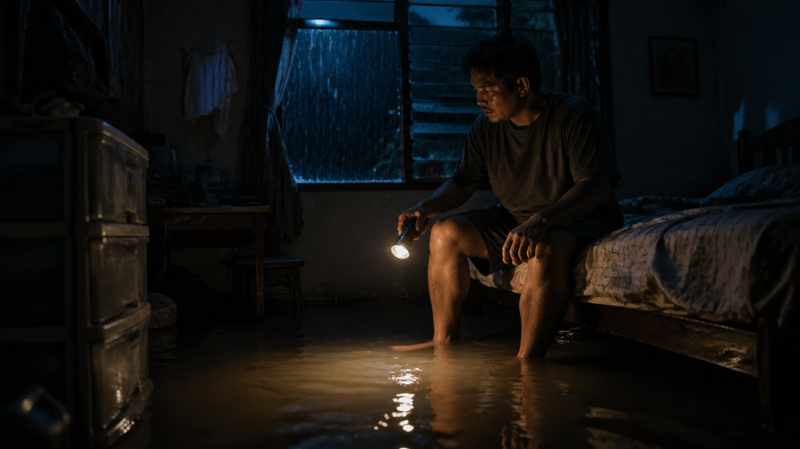
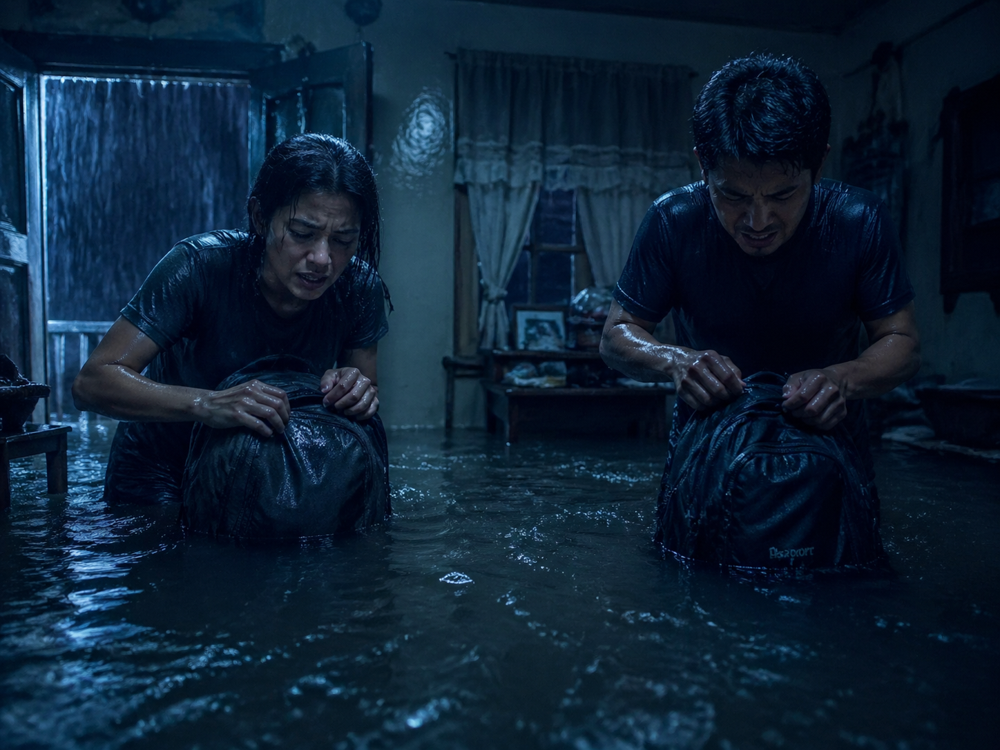
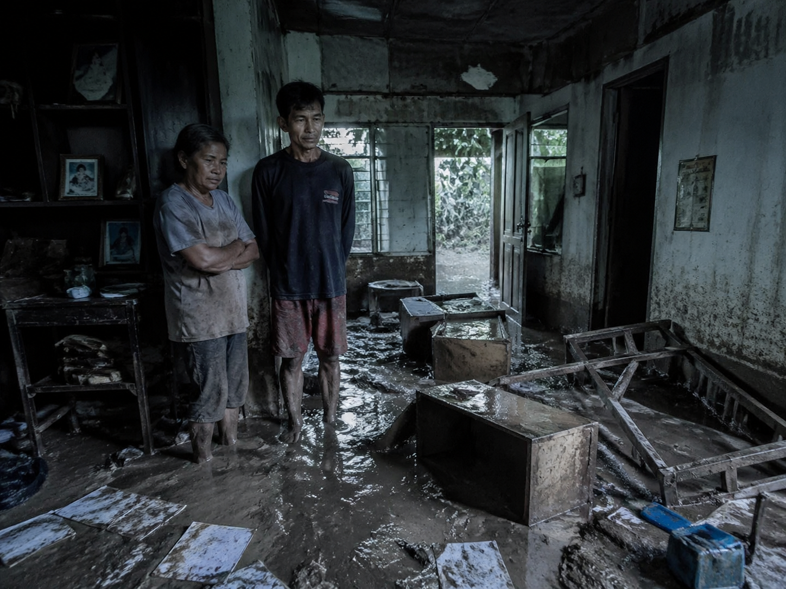

The Times · Disaster Narrative
台风夜，菲律宾，一场从睡梦中开始的逃亡

At 2:30 a.m., Elder woke to a strange sound—
a low, relentless roar outside his window in the Philippines.
He swung his legs off the bed and splashed into cold water, seven inches deep, right in his bedroom.
His heart raced as he realized the living room, just two steps down, was already under nearly two feet of floodwater.
A typhoon had struck, turning their home into a lake.
In the chaos, he and his companion scrambled to pack.
One backpack each, stuffed with whatever supplies they could grab—clothes, food, a flashlight.
The water inundated every corner, creeping higher by the minute.
Fear made his hands tremble as he zipped up the bag, the roar of the storm growing louder.
They had no choice but to evacuate, pushing through the soaked streets, wading for miles through water that tugged at their knees.

"They stood in silence, taking in the destruction, knowing they'd have to start over from nothing."
— What does it feel like to lose everything and start over?
Hours later, they reached a two-story church, a safe haven above the flood.
Days passed before they could return.
When they did, the sight was staggering.
Desks lay tipped over in murky water, furniture floated aimlessly, and every paper they owned was ruined.
Thick mud coated the floors, a grim reminder of the storm's power.
They stood in silence, taking in the destruction, knowing they'd have to start over from nothing.
